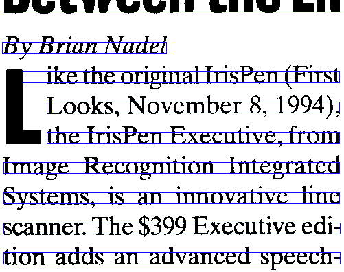

After the page decomposition, the next step in the recognition process is line segmentation. It consists of slicing a page of text or a zone of interest into its different lines.
“Line spacing” or “leading” — the word rhymes with “heading”, not with “reading” — indicates the amount of added vertical spacing between the lines. The word “leading” comes from the lead strips that were put between the set lines. When metal letters were set manually in printing presses, strips of lead were inserted between the lines to add vertical space and to fill out unused space on a page.
Without (inter)line spacing, text appears too cramped: the ascenders touch the descenders from the previous line, and the lack of white space makes it difficult for the human eye to follow the lines. This is the standard rule of thumb: use a leading value of 20% (or a line height of 120%) for normally set text.
|
18 pt type + no leading
line height: 18 pt |
18 pt type + 4 pt leading
line height: 22 pt |
Line segmentation sounds easy, given the white space between the lines: the program finds horizontal slices with lots of black pixels and slices that contain none or barely any black pixels. But there again a number of difficult cases — lineskew, drop letters and touching lines.
Let’s start with touching lines: when the interline spacing is reduced, the lines are difficult to segment because they contain touching characters.
But the problem is more complicated than that: the software has work its way around the shape of certain characters to separate the lines. (The “leg” of the “j”, “g”, “p” etc. character is called a “descender”.) Even when no characters touch on two successive lines, the character recognition can be confronted with line overlap: the dots on the “i’s”, the punctuation marks and the accents on certain vowels complicate things further because they’re hanging between two lines…
Lineskew constitutes a further challenge to the line segmentation: the OCR software has to detect the skew angle before it can segment the lines.
OCR systems can cope with lineskew when it is regular: placing text on a curved path makes it illegible to your OCR software.
OCR software for pen scanners is much more flexible in this respect — and it has to be: as you are operating a “hand-held” scanner, you will inevitably get wavy, distorted images. Unlike, say, flatbed scanners, pen scanners have no stepper motor or stabilizer bar to ensure that stable images get acquired! The only “stepper motor” involved is your hand that sweeps the pen scanner across the document.
Most pen scanners scan a document line by line (vertically) and are equipped with (a) roller(s) that allow(s) to detect the scanning speed.
Other pen scanners don’t have a roller: these pen scanners capture small two-dimensional images and require specialized software to “stitch” the overlapping bitmaps together.
(Incidentally, the new mouse scanners take the principle of image stitching to a whole new level! You swipe the mouse — sorry, scanner — across the document and that part of the image is generated. You could compare it to window cleaning, I guess…)
But whatever technique your pen scanner uses, wavy lines and highly distorted characters — skewed, stretched, compressed shapes etc. — can’t be avoided, even when you have the very regular, steady hand of a surgeon.
And when the line to be recognized has to be isolated first, the problem only gets worse! Pen scanners only read a single line at a time; when several lines occur in the scanned image, the one that is most central gets recognized and the other lines get discarded. This technique is called “central line tracking”.
Drop letters also render line segmentation more difficult. “Drop letters”, also called “drop caps” or “initials”, are large capital letters that cover several lines of text. They’re used to emphasize the beginning of a paragraph or section.

Some typographists distinguish “drop caps” and “raised caps”. “Raised caps” are also paragraph-initial capital letters set in a large point size. The difference with “drop letters” is that they’re aligned with the base line of the first line of the paragraph. Which means they do not cover several lines of text: no line segmentation issues here!
A historic note: using larger capitals to add emphasis at the start of a new section is by no means a new idea! The old manuscripts already had a sophisticated culture of “versal” letters. In medieval manuscripts, exquisite, detailed pictures of people (“anthropomorphic versals”), animals (“zoomorphic versals”) or a combination of both (“grotesque versals”) were added to embellish the letter shape. In other cases, no less than golden leaves were used to fill out these decorative letters!
Versal initial letters are often called “Lombardics” after the place of their appearance in the 11th century: Lombardy, a region in Northern Italy.
When these introductory letters contained elaborate decorative patterns, but not figures of people or animals, they were called “cadels”. (The term “cadel” was derived from “cadeau”, the French word for “gift”, “present”.) Here are some French examples from the early 15th century, which is when and where these cadels came from…
Cadels were black-and-white patterns: when printing presses replaced manuscripts, color was out of the question! But punchcutters could and did continue the tradition of cadels with single-color, black patterned drop letters.
(The word “punchcutter” may require some explanation. A “punch” is a metal tool which is the source for a block of type. When “punched” against a piece of hot metal, the convex carving of a letter on the punch leaves the impression of that letter on the paper. The “punchcutter” is the “sculptor” that creates these metal shapes that can be printed. Now, imagine having to carve out the “L” cadel above in a metal block…!)
Back to the present. Drop letters get recognized — provided they aren’t bigger than 72 point, that is! Some OCR software even recognizes inverted drop caps…
Japanese and Chinese documents require specific segmentation routines: the text flow is vertical, not horizontal. (Notice the Chinese drop letter in the upper right corner!)
Mathematical and scientific formulae disrupt the line segmentation altogether, as the following equations illustrate. No OCR system will ever read such data: Einstein’s theory of relativity can’t be OCRed!
(Then again, specialized companies have made some progress here: MicroBlink’s phone app PhotoMath photographs and recognizes simple equations – and solves them for you! Don’t expect it to read anything complicated as you see above, though…)
The same goes for some company logos — the lines overlap too much here to be segmented by a machine…
Let’s take things step by step, shall we? — Take us where the rainbow ends! — B is for binarize — What gets read and what doesn’t — Lines, lineskew and drop letters — Segmenting words and characters — Stylized fonts — Why is OCR software called omnifont? — What’s the role of linguistics in the OCR process?
Home page — Intro — Scanners — Images — History — OCR — Languages — Accuracy — Output — BCR — Pen scanners — Sitemap — Search — Feedback – Contact